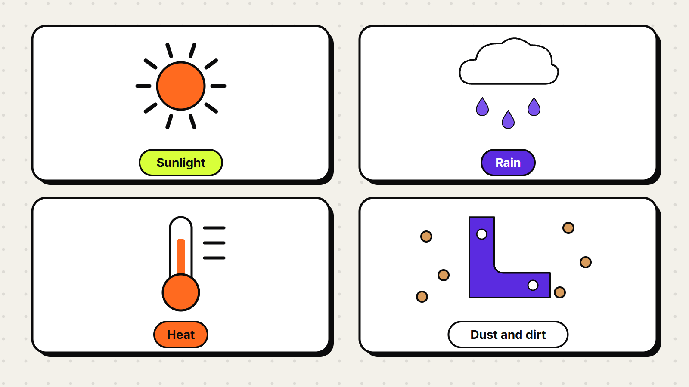
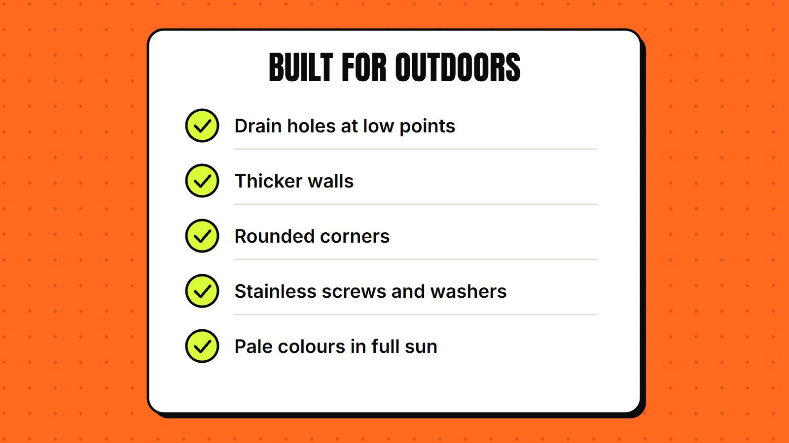

Outdoor parts have a hard life. Sunlight breaks down many plastics, rain finds every gap, and a metal railing at noon can be too hot to touch. A part that works perfectly indoors may fade, warp, or crack within a season outside. ASA is the filament most often chosen for this job. Here is what it does well, where it needs care, and how to design an outdoor part that lasts.
ASA stands for acrylonitrile styrene acrylate. It is a close relative of ABS, the tough plastic found in many everyday products. The main difference is that ASA uses a rubber component that stands up to ultraviolet light far better. That is why it is widely used for outdoor items.
Ultraviolet light slowly damages the long chains that give plastic its strength. The first sign is often fading or a chalky surface. Later the part becomes brittle. PLA is also affected by heat before sunlight has much time to act. PETG copes reasonably but can lose strength over long exposure. ASA resists these effects well, although no plastic is completely immune.

ASA begins to soften at around 95 to 105 °C, well above PLA and PETG. That gives a comfortable margin for balconies, terraces, and many vehicle exteriors. It is still plastic. Do not use it near flames, exhaust parts, cookers, or heaters.
ASA needs a warm bed, calm air, and often an enclosure to limit warping. It releases fumes while printing, so ventilation and filtration matter. These are jobs for the person running the printer, but they explain why ASA can cost a little more or take more planning than PLA.
| Material | Sunlight | Heat | Water | Verdict outdoors |
|---|---|---|---|---|
| PLA | Weakens over time | Low | Tolerates splashes | Avoid in sun |
| PETG | Fair | Medium | Good | Shaded spots |
| ABS | Yellows and weakens | High | Good | Better indoors |
| ASA | Good | High | Good | Usual first choice |
Check it after heavy rain and at the start of summer. Wipe off dust with mild soapy water and avoid strong solvents. Look at screw holes and the points where arms meet the base, since cracks start there. Replace a part that has turned chalky, bent, or loose.

Picture a hook over a balcony railing, holding a small planter. It faces afternoon sun and monsoon rain. A thin PLA hook would soften and creep. A better design uses ASA, wraps the rail with a rounded saddle, thickens the bend, adds a lip so the planter cannot slide off, and prints the hook on its side so the layers run along the curve. Keep the load light, and place it where a failure cannot drop anything onto people below.
With these details, the shape and the material can be chosen together, which matters more than either one alone.
Tip: Print one test part and leave it in the intended spot for a few weeks before ordering a whole batch.
There is no single figure. It depends on the design, the load, the colour, and how harsh the spot is. ASA lasts far better than PLA in sun, but every outdoor part deserves a check now and then.
The plastic itself copes well with water. A printed wall can still have tiny gaps between lines, so thicker walls help, and parts that must hold water need testing.
Many paints stick to ASA after light sanding and a suitable primer. Outdoor paint that resists sun is the better match, and a test patch is sensible.
ASA holds colour well compared with most printing plastics, though very bright shades can soften a little over long periods.
Not every part near a window needs ASA. A decoration on a shaded indoor shelf works well in PLA, and a clip in a humid bathroom may suit PETG. Choosing ASA only where sun, rain, or heat call for it keeps cost and printing difficulty sensible, and leaves a wider choice of colours for indoor pieces.
Read more on the ABS and ASA material page, compare options in our filament guide, or describe your outdoor part in the quote form.